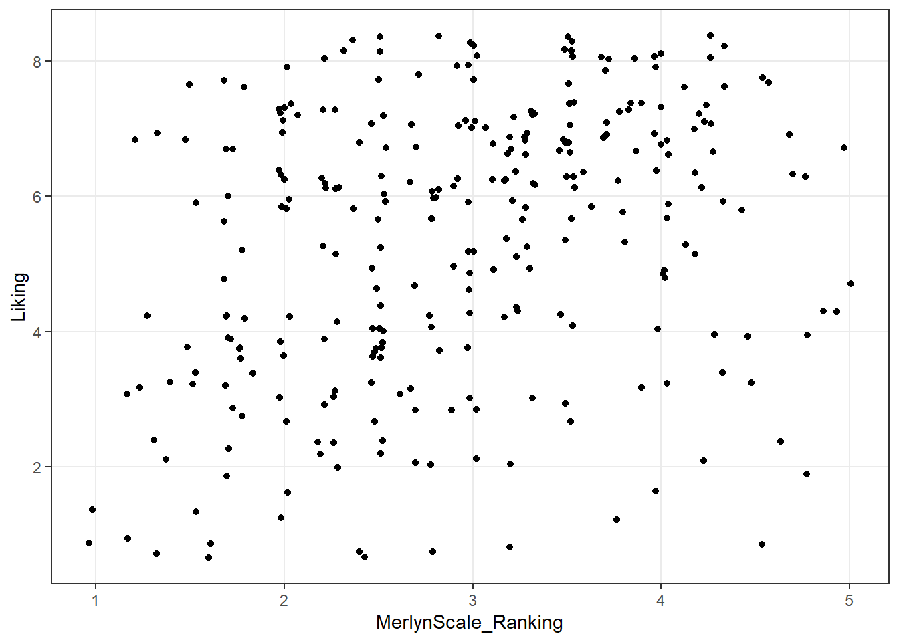
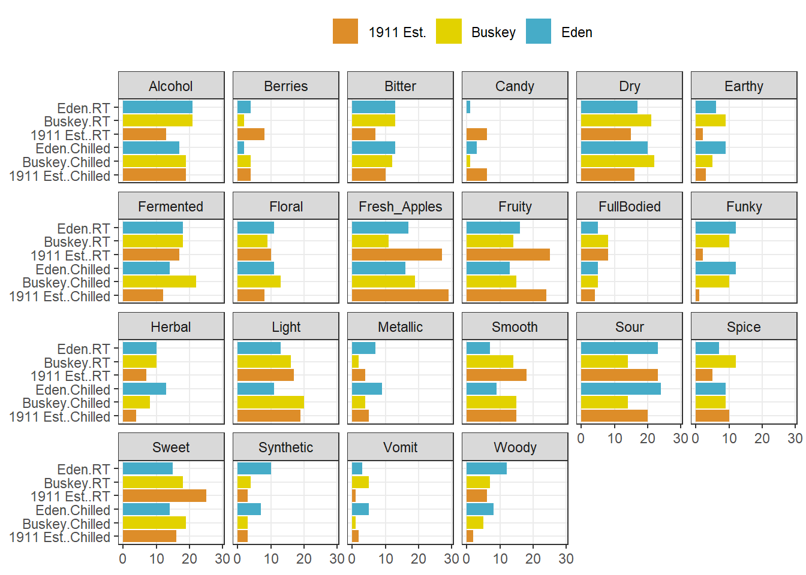
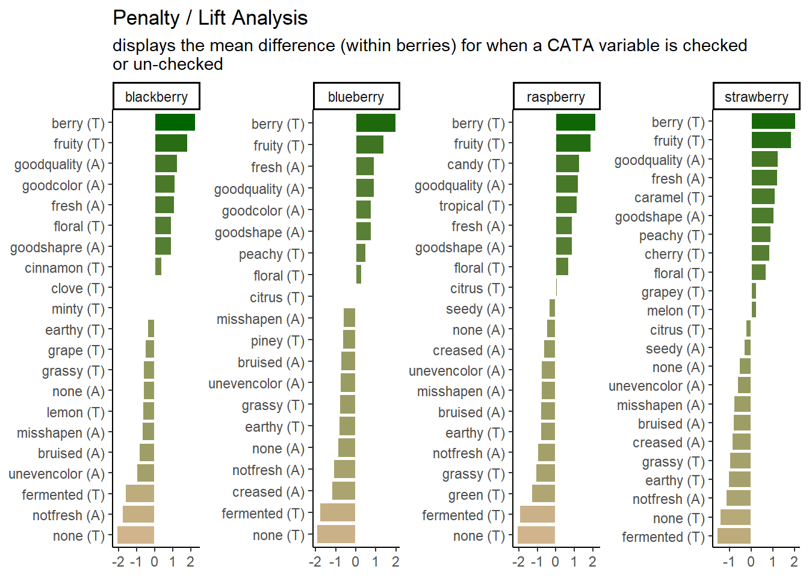

3 The basics of plotting with ggplot2
Base R includes extremely powerful utilities for data visualization, but most modern applications make use of the tidyverse package ggplot2.
A quick word about base R plotting–I don’t mean to declare that you can’t use base R plotting for your projects at all, and I have published several papers using base R plots. Particularly as you are using R for your own data exploration (not meant for sharing outside your team, say), base utilities like plot() will be very useful for quick insight.
ggplot2 provides a standardized, programmatic interface for data visualization, in contrast to the piecemeal approach common to base R graphics plotting. This means that, while the syntax itself can be challenging to learn, syntax for different tasks is linked by a common vocabulary, and differs in logical and predictable ways.
Together with other tidyverse principles (like select() and filter() approaches), ggplot2 makes it easy to make publication-quality visualizations with relative ease.
In general, ggplot2 works best with data in “long” or “tidy” format, such as that resulting from the output of pivot_longer(). The
The schematic elements of a ggplot are as follows:
# The ggplot() function creates your plotting environment. We usually save it to a variable in R so that we can use the plug-n-play functionality of ggplot without retyping a bunch of nonsense
p <- ggplot(mapping = aes(x = <a variable>, y = <another variable>, ...),
data = <your data>)
# Then, you can add various ways of plotting data to make different visualizations.
p +
geom_<your chosen way of plotting>(...) +
theme_<your chosen theme> +
...In graphical form, the following diagram (from VT Professor JP Gannon) gives an intuition of what is happening:

3.1 Your first ggplot()
Our cider data is already relatively tidy and is much easier to visually inspect, so we will be primarily using it in this section.
Let’s begin by making an example ggplot() to demonstrate how it works.
# We start with our data and pipe it into ggplot
raw_cider_data %>%
# Here we set up the base plot
ggplot(mapping = aes(x = MerlynScale_Ranking, y = Liking)) +
# Here we tell our base plot to add points
geom_point() 
This doesn’t look all that impressive–partly because the data being plotted itself isn’t that sensible, and partly because we haven’t made many changes. But before we start looking into that, let’s break down the parts of this command.
3.2 The aes() function and mapping = argument
The ggplot() function takes two arguments that are essential, as well as some others you’ll rarely use. The first, data =, is straightforward, and you’ll usually be passing data to the function at the end of some pipeline using %>%
The second, mapping =, is less clear. This argument requires the aes() function, which can be read as the “aesthetic” function. The way that this function works is quite complex, and really not worth digging into here, but I understand it in my head as telling ggplot() what part of my data is going to connect to what part of the plot. So, if we write aes(x = MerlynScale_Ranking), we can read this in our heads as “the values of x will be mapped from the ‘MerlynScale_Ranking’ column”.
This sentence tells us the other important thing about ggplot() and the aes() mappings: mapped variables each have to be in their own column. This is another reason that ggplot() requires tidy data.
3.3 Adding layers with geom_*() functions
In the above example, we added (literally, using +) a function called geom_point() to the base ggplot() call. This is functionally a “layer” of our plot, that tells ggplot2 how to actually visualize the elements specified in the aes() function–in the case of geom_point(), we create a point for each row’s combination of x = MerlynScale_Ranking and y = Liking.
## # A tibble: 288 × 2
## MerlynScale_Ranking Liking
## <dbl> <dbl>
## 1 2.3 6
## 2 3.5 7
## 3 2.8 4
## 4 4.2 2
## 5 2 7
## 6 4 5
## 7 3 8
## 8 3.3 6
## 9 3.5 7
## 10 4.5 3
## # ℹ 278 more rowsThere are many geom_*() functions in ggplot2, and many others defined in other accessory packages. These are the heart of visualizations. We can swap them out to get different results:
 Here we fit a smoothed line to our data using the default methods in
Here we fit a smoothed line to our data using the default methods in geom_smooth() (which in this case heuristically defaults to a spline model with LOESS smoothing, but could be linear, GAM, etc).
We can also combine layers, as the term “layer” implies:
raw_cider_data %>%
ggplot(mapping = aes(x = MerlynScale_Ranking, y = Liking)) +
geom_jitter() + # add some random noise to show overlapping points
geom_smooth()
Note that we don’t need to tell either geom_smooth() or geom_jitter() what x and y are–they “inherit” them from the ggplot() function to which they are added (+), which defines the plot itself.
What other arguments can be set to aesthetics? Well, we can set other visual properties like color, size, transparency (called “alpha”), and so on. For example, let’s try to look at whether there is a relationship between whether a cider is perceived as “Dry” through CATA, measured as “Dry” (low values) on the Merlyn Scale, and overall liking.
raw_cider_data %>%
mutate(Dry = as.factor(Dry)) %>%
ggplot(mapping = aes(x = MerlynScale_Ranking, y = Liking, color = Dry)) +
geom_jitter(alpha = 1/2) +
scale_color_manual(values = c("darkblue", "darkorange")) +
theme_bw()
We can see that most of the orange dots are to the left side of the figure (associated with lower Merlyn scale ratings), and that most of th3e blue dots are to the right (associated with higher Merlyn Scale ratings). It’s hard to make sense of patterns of liking in this visualization, but it looks like “Dry” CATA checks may have somewhat lower liking ratings overall.
3.4 Arguments inside and outside of aes()
In the last plot, we saw an example in the geom_jitter(alpha = 1/2) function of setting the alpha (transparency) aesthetic element directly, without using aes() to map a variable to this aesthetic. That is why this is not wrapped in the aes() function. In ggplot2, this is how we set aesthetics to fixed values.
If we had a value we wanted to map transparency to, we would set aes(alpha = <variable>). In this dataset, I can’t think of a good option for alpha, but note that we can set any variable in these two ways:
# First, here is the previous figure, showing how we can set aesthetics
raw_cider_data %>%
mutate(Dry = as.factor(Dry)) %>%
ggplot(aes(x = MerlynScale_Ranking, y = Liking)) +
# We can set new aes() mappings in individual layers, as well as the plot itself
geom_jitter(aes(color = Dry)) +
scale_color_manual(values = c("darkblue", "darkorange")) +
theme_bw()
# And now we manually set a color for our points: note this means our color
# WON'T change with different values of a variable.
raw_cider_data %>%
mutate(Dry = as.factor(Dry)) %>%
ggplot(aes(x = MerlynScale_Ranking, y = Liking)) +
# notice we no longer use aes() below, and color no longer matches `Dry`
geom_jitter(color = "darkorange") +
theme_bw()
3.4.1 Using theme_*() to change visual options quickly
In the last several plots, notice that we have changed from the default (and to my mind unattractive) grey background of ggplot2 to a black and white theme. This is by adding a theme_bw() call to the list of commands. ggplot2 includes a number of default theme_*() functions, and you can get many more through other R packages. They can have subtle to dramatic effects:

You can edit every last element of the plot’s theme using the base theme() function, which is powerful but a little bit tricky to use.
raw_cider_data %>%
ggplot(aes(x = MerlynScale_Ranking, y = Liking)) +
geom_jitter() +
theme_bw() +
# we use theme() to remove grid lines, for example
theme(panel.grid = element_blank())
Most of the use of theme() involves functions names as element_*(). When we remove elements, for example, we use element_blank() (not, for example, NA or NULL as we typically would in other parts of R).
Finally, we can set default themes for a particular script using the theme_set() function. We can also use this to set custom defaults:
theme_set(
theme_bw() +
theme(panel.grid.minor = element_blank())
)
raw_cider_data %>%
ggplot(aes(x = MerlynScale_Ranking, y = Liking)) +
geom_jitter()
All plots from here on will default to the theme_bw() theme, with the “minor” grid lines removed for a cleaner grid look.
3.4.2 Changing aesthetic elements with scale_*() functions
Finally, say we didn’t like the default color set for the points.
How can we manipulate the colors that are plotted? The way in which mapped, aesthetic variables are assigned to visual elements is controlled by the scale_*() functions.
In my experience, the most frequently encountered scales are those for color: either scale_fill_*() for solid objects (like the bars in a histogram) or scale_color_*() for lines and points (like the outlines of the histogram bars).
Scale functions work by telling ggplot() how to map aesthetic variables to visual elements. You may have noticed that I added a scale_color_manual() function to the end of several plots above. This function lets me manually specify the colors that are assigned to each colored element.
p <-
raw_cider_data %>%
mutate(Dry = as.factor(Dry)) %>%
# This block gets us a subset of beer styles for clear visualization
ggplot(mapping = aes(x = Liking)) +
geom_density(mapping = aes(fill = Dry), alpha = 1/3, color = "transparent")
p
We can take a saved plot (like p) and use scales to change how it is visualized.

ggplot2 has a broad range of built-in options for scales, but there are many others available in add-on packages that build on top of it. The scale_*_viridis_*() functions use a package callled viridis that provides (theoretically) color-blind safe colors for both continuous (gradient) and categorical (discrete) mappings, but I do find that their defaults (using light colors like yellow on one end of the scale) are hard to see for anyone!
As we saw above, you can also build your own scales using the scale_*_manual() functions, in which you give a vector of the same length as your mapped aesthetic variable in order to set up the visual assignment. That sounds jargon-y, so here is an example:
# We'll pick 14 random colors from the colors R knows about
random_colors <- print(colors()[sample(x = 1:length(colors()), size = 10)])## [1] "gray95" "gray33" "blueviolet" "peachpuff2"
## [5] "grey99" "green" "grey74" "grey44"
## [9] "chocolate4" "paleturquoise2"
3.4.3 Finally, facet_*()
The last powerful tool I want to show off is the ability of ggplot2 to make what Edward Tufte called “small multiples”: breaking out the data into multiple, identical plots by some categorical classifier in order to show trends more effectively.
So far we’ve seen how to visualize the overall liking of ciders in our small data set by the Merlyn Scale Ranking, and how to assign color, transparency, and fill to other attributes. We can use such an approach to get a quick picture of the CATA selections for each cider in a clear, easy to see visualization:
raw_cider_data %>%
pivot_longer(Fresh_Apples:Synthetic) %>%
group_by(Sample_Name, Temperature, name) %>%
summarize(total = sum(value)) %>%
ggplot(aes(x = interaction(Sample_Name, Temperature), y = total)) +
geom_col(aes(fill = Sample_Name)) +
scale_fill_manual(values = wesanderson::wes_palettes$FantasticFox1) +
coord_flip() +
facet_wrap(~name, ncol = 6) +
labs(x = NULL, y = NULL, fill = NULL) +
theme(legend.position = "top")
We can see that overall for the most frequently used attributes, the serving temperature doesn’t matter (and for the most part there is some reassuring consistency in the use of terms to describe each cider at different temperatures).
But in the previous part of this workshop, we showed much more complex plots for our berry data, which showed the same plot broken up by a classifying variable: this is called “faceting”. Let’s return from our cider data to our berry data in order to finally complete the workflow I showed in the beginning of the workshop.
Now we are prepared to walk through the entire workflow
# First we wrangle our data using the tools we've learned to get penalties/lifts
# for each attributes
berry_penalty_analysis_data <-
berry_long_cata %>%
group_by(berry, cata_variable, checked) %>%
summarize(penalty_lift = mean(rating),
count = n()) %>%
ungroup()
p1_berry_penalty <-
# We start by widening our data just a bit, and use a function to give some
# better names to our mean values for when an attribute it checked (1) or not
# (0).
berry_penalty_analysis_data %>%
select(-count) %>%
pivot_wider(names_from = checked,
values_from = penalty_lift,
names_prefix = "checked_") %>%
# Then we actually calculate the penalty/lift: what is the difference in the
# mean liking when an attribute is checked or not?
group_by(berry, cata_variable) %>%
summarize(penalty_lift = checked_1 - checked_0) %>%
# We have two kinds of CATA attibutes: visual assessment and by-mouth
# assessment. It would be nice to keep track.
separate(cata_variable,
into = c("mode", "variable"),
sep = "_") %>%
# Fix a typo
mutate(mode = str_replace(mode, "appearane", "appearance")) %>%
mutate(mode = case_when(mode == "taste" ~ "(T)",
mode == "appearance" ~ "(A)")) %>%
unite(variable, mode, col = "cata_variable", sep = " ") %>%
# We are using a function from tidytext that makes faceting the final figure
# easier: reorder_within() makes a set of factors able to be ordered
# differently within another variable. In this case, we have different
# attributes and different penalties within each berry by design
mutate(cata_variable = tidytext::reorder_within(x = cata_variable,
by = penalty_lift,
within = berry)) %>%
#And finally we plot!
ggplot(mapping = aes(x = cata_variable, y = penalty_lift)) +
geom_col(aes(fill = penalty_lift), color = "white", show.legend = FALSE) +
facet_wrap(~berry, scales = "free", nrow = 1) +
# To take advantage of our newly reordered factors, we also need to use the
# matching tidytext::scale_x_reordered() function
tidytext::scale_x_reordered() +
coord_flip() +
theme_classic() +
scale_fill_gradient(low = "tan", high = "darkgreen") +
labs(x = NULL, y = NULL,
title = "Penalty / Lift Analysis",
subtitle = "displays the mean difference (within berries) for when a CATA variable is checked\nor un-checked")
# Let's save it so we can come back to it later:
save(p1_berry_penalty, file = "data/goal-plot.RData")
p1_berry_penalty
We can see that the 2 most important attributes for driving liking are the same across all 4 berries, but that the highest penalty is different across them.
3.5 Some further reading
This has been a lightning tour of ggplot2 as preparatory material; it barely scratches the surface. We’re going to dig into some further tools that you can use for common sensory visualizations, but we’ve learned all of these tricks from the following resources (as well as a lot of work on Stack Overflow/Exchange):
- Kieran Healy’s “Data Visualization: a Practical Introduction”.
- The plotting section of R for Data Science.
- Hadley Wickham’s core reference textbook on ggplot2.